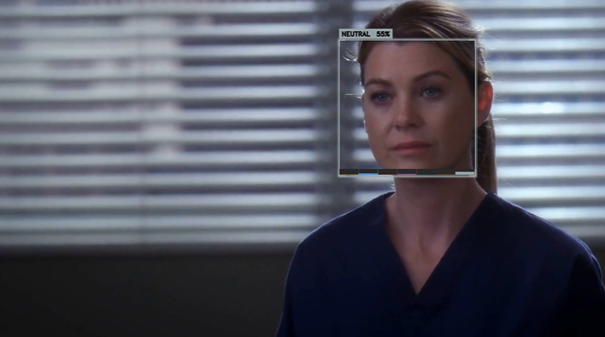
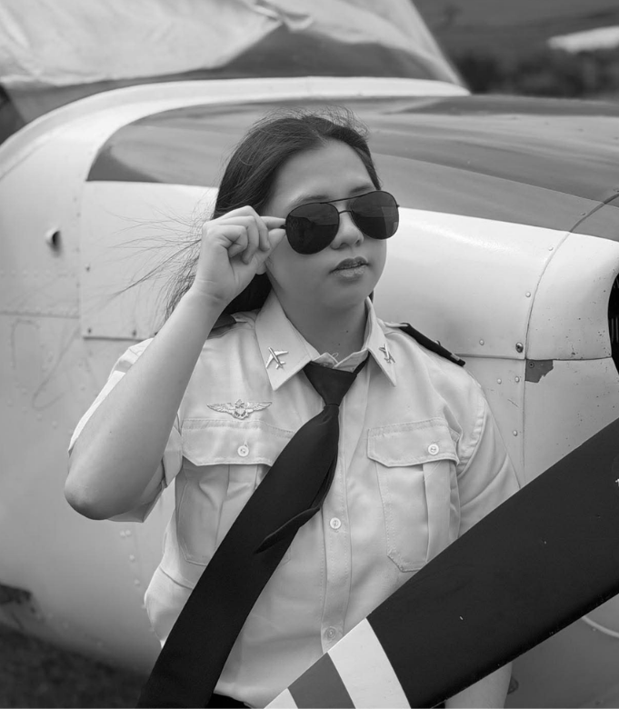
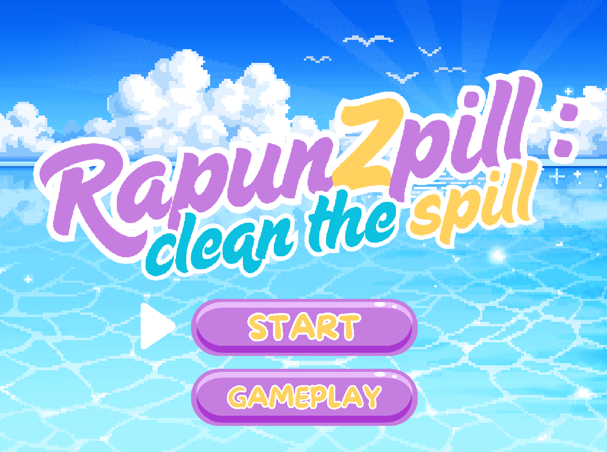
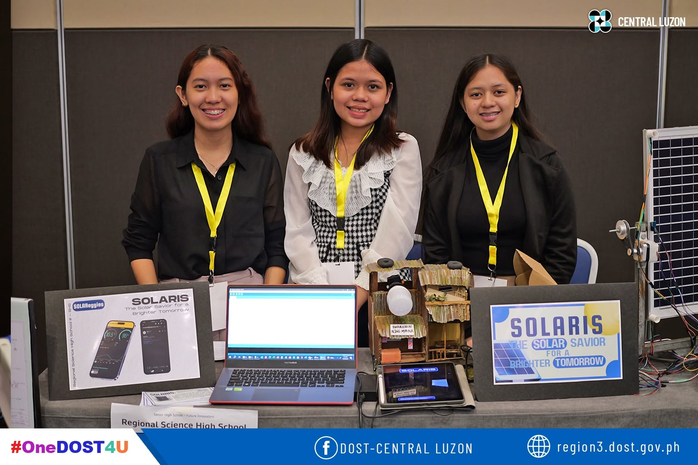

Emotion Detector
I made it using Python in Kaggle and DeepFace to analyze facial expressions in a video, track seven emotions, and visualize how they change over time. This project helped me explore how AI can interpret visual data.


The world shall know (how to pronounce) my name.
I'm a 3rd-year BA Multimedia Studies student and a freelance video editor working with real estate and life insurance companies. I'm a technology enthusiast who loves robotics and building IoT projects.
A creative at heart with big dreams, I'm building my career while working toward my biggest goal: becoming a pilot. Grounded for now, but always looking toward the skies.
I made it using Python in Kaggle and DeepFace to analyze facial expressions in a video, track seven emotions, and visualize how they change over time. This project helped me explore how AI can interpret visual data.

We turned our junior's award-winning research project from our former high school into a game using Scratch, with game assets designed in Canva. I then converted it into HTML, CSS, and JavaScript and published it on Game Jolt. It was a fun way to make scientific research more interactive.

A solar energy research project using an IoT-based sunlight tracker with efficiency enhancement and fault detection. It won first place at the Division Research Congress, qualified for the 23rd Philippine Robotics Olympiad, and earned a bronze medal at the Olongapo City Robotics Cup.

Email: ghannmedina10@gmail.com
WhatsApp: Chat on WhatsApp (opens in a new tab)